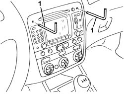
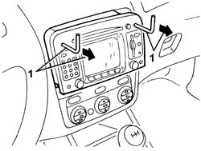
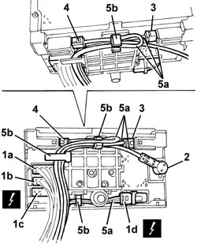
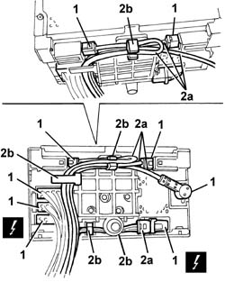

5580P12 CONNECT PANEL REPLACE
- Path
- Procedures > 55 ELECTRICAL EQUIPMENT > 5580 SPECIAL ACCESSORIES > 5580P CONNECT PANEL > 5580P12 CONNECT PANEL REPLACE
- Kind
- repair procedure (removal / refitting; the operation number is the code)
- Applies to
- all engines; all production periods
- Interactive page
- https://sloeber94.github.io/elrnDB-aGt/en/#/125001744
Applies to: all engines; all production periods
 Removing
Removing
 Refitting
Refitting1. Fit the tools (1.871.003.000) in the special housings in the Connect panel making sure that they are correctly attached.

Applies to: all engines; all production periods
1. Extract the Connect panel pulling the tools.

Applies to: all engines; all production periods
1. Disconnect the electrical connections (1a, 1b, 1c, 1d).
Description | Connector | |
|---|---|---|
1a | Radio | See P20A RADIO ( FACIA ) |
Description | Connector | |
|---|---|---|
1b | Radio | See P20B RADIO ( FACIA ) |
Description | Connector | |
|---|---|---|
1c | Radio | See P20C RADIO ( FACIA ) |
Description | Connector | |
|---|---|---|
1d | Radio | See P20D RADIO ( FACIA ) |
2. Disconnect the radio aerial.
3. Disconnect the GPS aerial.
4. Disconnect the GSM aerial.
5. Release the wiring (5a) from the retainers (5b).
6. Keep the Connect panel.

Applies to: all engines; all production periods
Refitting
RemovingCheck that the Connect panel is not damaged.
1. Connect the electrical connections and the connections for the aerials.
2. Position the wiring (2a) carefully as illustrated and secure it to the retainers (2b).

Applies to: all engines; all production periods
Place the Connect panel in position taking great care and avoiding any interference with the cables at the back. If there is interference, check that the cables are correctly positioned (see previous diagram).
Check the operation of the Connect panel.
Topics that link to this page (8)
- N28 THE FUNCTIONS ARE NOT SELECTED WHEN THE BUTTONS ARE PRESSED
- N35 I.C.S. TELEPHONE DEVICE NOT WORKING
- N39 I.C.S. DETECTS INCORRECT POSITION
- N41 VEHICLE ARROW DOES NOT MOVE
- N42 I.C.S. DOES NOT GIVE' AUDIO MESSAGES
- N65 CONNECT NOT WORKING
- N70 CONTROLS ON THE STEERING WHEEL NOT WORKING
- 5580P20 CENTRALINA DEL CONNECT - S.R.